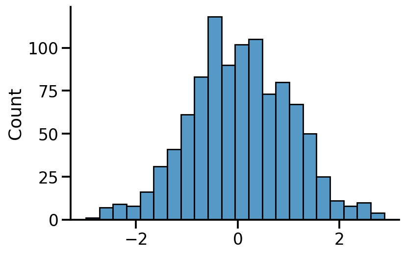
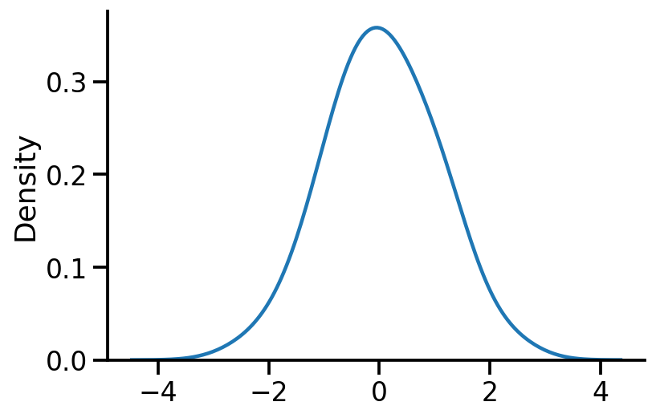
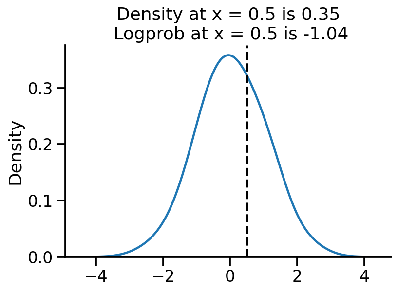
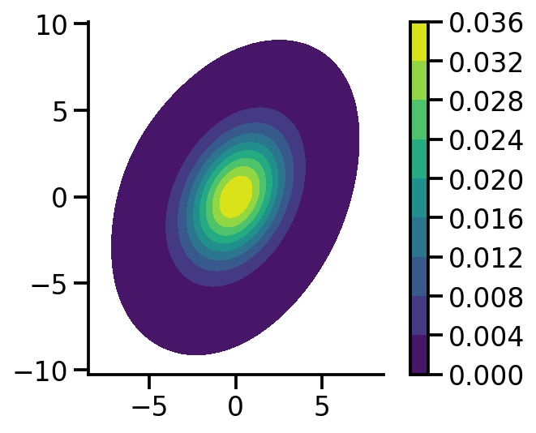

import torch
import seaborn as sns
import pandas as pd
import matplotlib.pyplot as plt
sns.reset_defaults()
sns.set_context(context="talk", font_scale=1)
%matplotlib inline
%config InlineBackend.figure_format='retina'Maximum Likelihood Estimation (MLE) for parameters of univariate and multivariate normal distribution in PyTorch
dist = torch.distributionsCreating a 1d normal distribution
uv_normal = dist.Normal(loc=0.0, scale=1.0)Sampling from the distribution
samples = uv_normal.sample(sample_shape=[1000])sns.histplot(samples)
sns.despine()
sns.kdeplot(samples, bw_adjust=2)
sns.despine()
Computing logprob and prob at a given x
sns.kdeplot(samples, bw_adjust=2)
plt.axvline(0.5, color="k", linestyle="--")
log_pdf_05 = uv_normal.log_prob(torch.Tensor([0.5]))
pdf_05 = torch.exp(log_pdf_05)
plt.title(
"Density at x = 0.5 is {:.2f}\n Logprob at x = 0.5 is {:.2f}".format(
pdf_05.numpy()[0], log_pdf_05.numpy()[0]
)
)
sns.despine()
Learning parameters via MLE
Let us generate some normally distributed data and see if we can learn the mean.
train_data = uv_normal.sample([10000])uv_normal.loc, uv_normal.scale(tensor(0.), tensor(1.))train_data.mean(), train_data.std()(tensor(-0.0174), tensor(1.0049))The above is the analytical MLE solution
Setting 1: Fixed scale, learning only location
loc = torch.tensor(-10.0, requires_grad=True)
opt = torch.optim.Adam([loc], lr=0.01)
for i in range(3100):
to_learn = torch.distributions.Normal(loc=loc, scale=1.0)
loss = -torch.sum(to_learn.log_prob(train_data))
loss.backward()
if i % 500 == 0:
print(f"Iteration: {i}, Loss: {loss.item():0.2f}, Loc: {loc.item():0.2f}")
opt.step()
opt.zero_grad()Iteration: 0, Loss: 512500.16, Loc: -10.00
Iteration: 500, Loss: 170413.53, Loc: -5.61
Iteration: 1000, Loss: 47114.50, Loc: -2.58
Iteration: 1500, Loss: 18115.04, Loc: -0.90
Iteration: 2000, Loss: 14446.38, Loc: -0.22
Iteration: 2500, Loss: 14242.16, Loc: -0.05
Iteration: 3000, Loss: 14238.12, Loc: -0.02print(
f"MLE location gradient descent: {loc:0.2f}, MLE location analytical: {train_data.mean().item():0.2f}"
)MLE location gradient descent: -0.02, MLE location analytical: -0.02Setting 2: Learning location and scale
An important difference from the previous code is that we need to use a transformed variable to ensure scale is positive. We do so by using softplus.
loc = torch.tensor(-10.0, requires_grad=True)
scale = torch.tensor(2.0, requires_grad=True)
opt = torch.optim.Adam([loc, scale], lr=0.01)
for i in range(5100):
scale_softplus = torch.functional.F.softplus(scale)
to_learn = torch.distributions.Normal(loc=loc, scale=scale_softplus)
loss = -torch.sum(to_learn.log_prob(train_data))
loss.backward()
if i % 500 == 0:
print(
f"Iteration: {i}, Loss: {loss.item():0.2f}, Loc: {loc.item():0.2f}, Scale: {scale_softplus.item():0.2f}"
)
opt.step()
opt.zero_grad()Iteration: 0, Loss: 127994.02, Loc: -10.00, Scale: 2.13
Iteration: 500, Loss: 37320.10, Loc: -6.86, Scale: 4.15
Iteration: 1000, Loss: 29944.32, Loc: -4.73, Scale: 4.59
Iteration: 1500, Loss: 26326.08, Loc: -2.87, Scale: 4.37
Iteration: 2000, Loss: 22592.90, Loc: -1.19, Scale: 3.46
Iteration: 2500, Loss: 15968.47, Loc: -0.06, Scale: 1.63
Iteration: 3000, Loss: 14237.87, Loc: -0.02, Scale: 1.01
Iteration: 3500, Loss: 14237.87, Loc: -0.02, Scale: 1.00
Iteration: 4000, Loss: 14237.87, Loc: -0.02, Scale: 1.00
Iteration: 4500, Loss: 14237.87, Loc: -0.02, Scale: 1.00
Iteration: 5000, Loss: 14237.87, Loc: -0.02, Scale: 1.00print(
f"MLE loc gradient descent: {loc:0.2f}, MLE loc analytical: {train_data.mean().item():0.2f}"
)
print(
f"MLE scale gradient descent: {scale_softplus:0.2f}, MLE scale analytical: {train_data.std().item():0.2f}"
)MLE loc gradient descent: -0.02, MLE loc analytical: -0.02
MLE scale gradient descent: 1.00, MLE scale analytical: 1.00mvn = dist.MultivariateNormal(
loc=torch.zeros(2), covariance_matrix=torch.tensor([[1.0, 0.5], [0.5, 2.0]])
)mvn_samples = mvn.sample([1000])sns.kdeplot(
x=mvn_samples[:, 0],
y=mvn_samples[:, 1],
zorder=0,
n_levels=10,
shade=True,
cbar=True,
thresh=0.001,
cmap="viridis",
bw_adjust=5,
cbar_kws={
"format": "%.3f",
},
)
plt.gca().set_aspect("equal")
sns.despine()
Setting 1: Fixed scale, learning only location
loc = torch.tensor([-10.0, 5.0], requires_grad=True)
opt = torch.optim.Adam([loc], lr=0.01)
for i in range(4100):
to_learn = dist.MultivariateNormal(
loc=loc, covariance_matrix=torch.tensor([[1.0, 0.5], [0.5, 2.0]])
)
loss = -torch.sum(to_learn.log_prob(mvn_samples))
loss.backward()
if i % 500 == 0:
print(f"Iteration: {i}, Loss: {loss.item():0.2f}, Loc: {loc}")
opt.step()
opt.zero_grad()Iteration: 0, Loss: 81817.08, Loc: tensor([-10., 5.], requires_grad=True)
Iteration: 500, Loss: 23362.23, Loc: tensor([-5.6703, 0.9632], requires_grad=True)
Iteration: 1000, Loss: 7120.20, Loc: tensor([-2.7955, -0.8165], requires_grad=True)
Iteration: 1500, Loss: 3807.52, Loc: tensor([-1.1763, -0.8518], requires_grad=True)
Iteration: 2000, Loss: 3180.41, Loc: tensor([-0.4009, -0.3948], requires_grad=True)
Iteration: 2500, Loss: 3093.31, Loc: tensor([-0.0965, -0.1150], requires_grad=True)
Iteration: 3000, Loss: 3087.07, Loc: tensor([-0.0088, -0.0259], requires_grad=True)
Iteration: 3500, Loss: 3086.89, Loc: tensor([ 0.0073, -0.0092], requires_grad=True)
Iteration: 4000, Loss: 3086.88, Loc: tensor([ 0.0090, -0.0075], requires_grad=True)loc, mvn_samples.mean(axis=0)(tensor([ 0.0090, -0.0075], requires_grad=True), tensor([ 0.0090, -0.0074]))We can see that our approach yields the same results as the analytical MLE
Setting 2: Learning scale and location
We need to now choose the equivalent of standard deviation in MVN case, this is the Cholesky matrix which should be a lower triangular matrix
loc = torch.tensor([-10.0, 5.0], requires_grad=True)
tril = torch.autograd.Variable(torch.tril(torch.ones(2, 2)), requires_grad=True)
opt = torch.optim.Adam([loc, tril], lr=0.01)
for i in range(8100):
to_learn = dist.MultivariateNormal(loc=loc, covariance_matrix=tril @ tril.t())
loss = -torch.sum(to_learn.log_prob(mvn_samples))
loss.backward()
if i % 500 == 0:
print(f"Iteration: {i}, Loss: {loss.item():0.2f}, Loc: {loc}")
opt.step()
opt.zero_grad()Iteration: 0, Loss: 166143.42, Loc: tensor([-10., 5.], requires_grad=True)
Iteration: 500, Loss: 9512.82, Loc: tensor([-7.8985, 3.2943], requires_grad=True)
Iteration: 1000, Loss: 6411.09, Loc: tensor([-6.4121, 2.5011], requires_grad=True)
Iteration: 1500, Loss: 5248.90, Loc: tensor([-5.0754, 1.8893], requires_grad=True)
Iteration: 2000, Loss: 4647.84, Loc: tensor([-3.8380, 1.3627], requires_grad=True)
Iteration: 2500, Loss: 4289.96, Loc: tensor([-2.6974, 0.9030], requires_grad=True)
Iteration: 3000, Loss: 4056.93, Loc: tensor([-1.6831, 0.5176], requires_grad=True)
Iteration: 3500, Loss: 3885.87, Loc: tensor([-0.8539, 0.2273], requires_grad=True)
Iteration: 4000, Loss: 3722.92, Loc: tensor([-0.2879, 0.0543], requires_grad=True)
Iteration: 4500, Loss: 3495.34, Loc: tensor([-0.0310, -0.0046], requires_grad=True)
Iteration: 5000, Loss: 3145.29, Loc: tensor([ 0.0089, -0.0075], requires_grad=True)
Iteration: 5500, Loss: 3080.54, Loc: tensor([ 0.0090, -0.0074], requires_grad=True)
Iteration: 6000, Loss: 3080.53, Loc: tensor([ 0.0090, -0.0074], requires_grad=True)
Iteration: 6500, Loss: 3080.53, Loc: tensor([ 0.0090, -0.0074], requires_grad=True)
Iteration: 7000, Loss: 3080.53, Loc: tensor([ 0.0090, -0.0074], requires_grad=True)
Iteration: 7500, Loss: 3080.53, Loc: tensor([ 0.0090, -0.0074], requires_grad=True)
Iteration: 8000, Loss: 3080.53, Loc: tensor([ 0.0090, -0.0074], requires_grad=True)to_learn.loc, to_learn.covariance_matrix(tensor([ 0.0090, -0.0074], grad_fn=<AsStridedBackward0>),
tensor([[1.0582, 0.4563],
[0.4563, 1.7320]], grad_fn=<ExpandBackward0>))mle_loc = mvn_samples.mean(axis=0)
mle_loctensor([ 0.0090, -0.0074])mle_covariance = (
(mvn_samples - mle_loc).t() @ ((mvn_samples - mle_loc)) / mvn_samples.shape[0]
)
mle_covariancetensor([[1.0582, 0.4563],
[0.4563, 1.7320]])We can see that our gradient based methods parameters match those of the MLE computed analytically.
References
- https://stats.stackexchange.com/questions/351549/maximum-likelihood-estimators-multivariate-gaussian
- https://forum.pyro.ai/t/mle-for-normal-distribution-parameters/3861/3
- https://ericmjl.github.io/notes/stats-ml/estimating-a-multivariate-gaussians-parameters-by-gradient-descent/